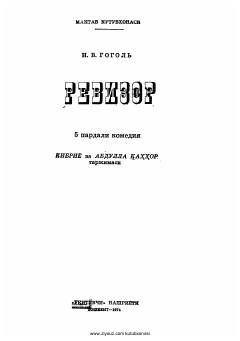

RPoraxo'rlik va mansabparastlikni fosh etuvchi o'tkir hajviy komediya.
Nikolay Gogolning ushbu mashhur komediyasi kichik bir shaharchaga kelib qolgan yosh amaldorning xato tufayli tekshiruvchi (revizor) deb qabul qilinishi haqida hikoya qiladi. Asar jamiyatdagi poraxo'rlik, mansabparastlik va insoniy illatlarni o'tkir hajviy uslubda fosh etadi.